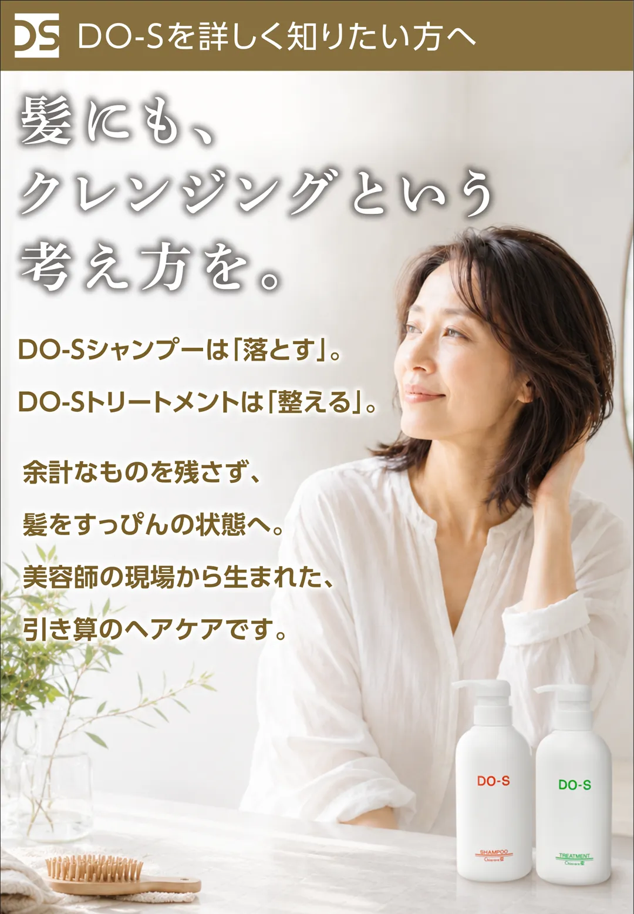
髪に余計なものが
蓄積する影響を受けやすい方へ
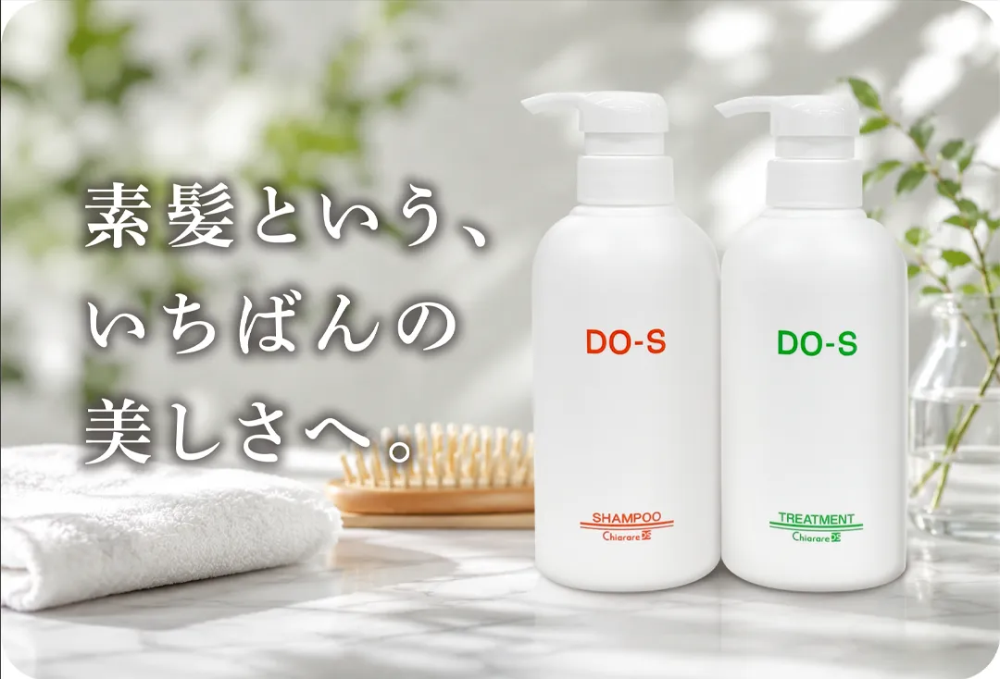
DO-Sシャンプー&トリートメント
400mlセット ¥7,920(税込)
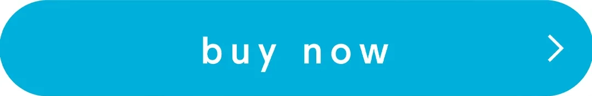
髪は毎日付き合うもの。だからこそ、
少し扱いやすくなるだけで、
毎日の気持ちが大きく変わります。
鏡の前で悩む時間が少なくなる
湿気が多い日も気持ちが軽い
つい気になって髪を触るクセが減る
髪のことを考える時間が減る
年齢のせいなのか？
髪質が変わったせいなのか？
それとも、今のヘアケアが合わなくなったから
なのか？
はっきりとは分からないけど、
以前より髪が扱いづらくなった。
そんな違和感を感じている方へ。
昔より髪が重く感じる
トリートメントしているのにまとまらない
夕方になるとペタッとしてしまう
髪をつい何度も触ってしまう
雨の日、髪が決まらない
美容室帰りの状態が続かない
もし1つでも当てはまったら、
髪そのものではなく、
髪や頭皮に残っているものが原因かもしれません。
DO-Sは、現場で多く耳にする
お客様の声と美容師としての違和感から
生まれました。
髪が扱いにくくなると、
多くの場合、
私たちは何かを足そうとします。
トリートメントを変える。
オイルを使う。
スタイリング剤を重ねる。
でもDO-Sは、
まず髪を整えることを考えます。
DO-Sシャンプーは「落とす」。
DO-Sトリートメントは「整える」。
髪を変えようとするのではなく、
まず髪を本来の状態に整える。
ヘアケアをするほど、
髪が扱いやすくなる。
DO-Sが目指したのは、
そんな当たり前のことでした。
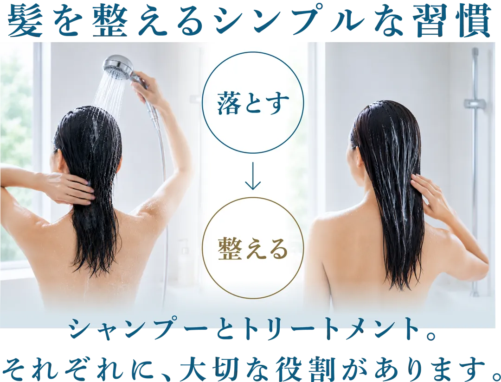
シャンプーは髪のクレンジング。
余計なものを落とす。
トリートメントは髪の美容液。
髪のコンディションを整える。
どちらか片方では完成しません。
顔のスキンケアに、
クレンジングと美容液があるように、
DO-Sヘアケアも、
シャンプーとトリートメントで、
ひとつのヘアケアです。
実際に使われている方々の声を紹介
「自分の髪が分かるようになった」
今までは良いと思っていたものが、
実は髪を重くしていたことに気づきました。
まず自分の髪の状態を知れたことが、
一番大きな変化だったと思います。
50代女性
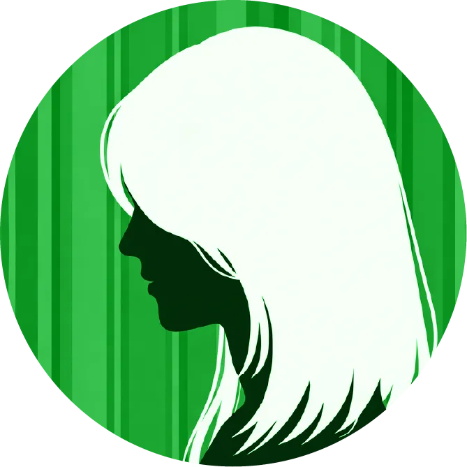
「トリートメントの考え方が変わった」
今まではたくさん付けるほど良いと思って
いました。DO-Sを使うようになってから、
髪を整えるという考えを知りました。
40代女性
「ヘアケアがシンプルになった」
以前は色々な商品を使っていました。
今は、必要以上に足さなくなり、毎日の
ケアがシンプルになりました。
50代女性
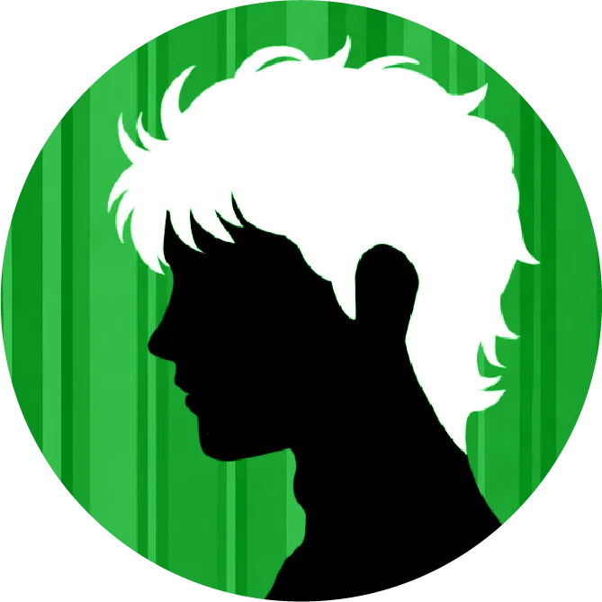
「お客様との会話が変わった」
以前よりホームケアの話をする機会が増えま
した。美容室だけでなく、毎日の積み重ねが
大切だと、改めて感じています。
40代美容師
「使い続ける理由があります」
もう長い付き合いです。
気づけば、ずっと使い続けています。
そんなシャンプーは初めてでした。
60代女性
「お客様の再現性が上がった」
美容師としても共感しています。
お客様から「家でもまとまりやすい」と
言われることが増えました。
50代美容師
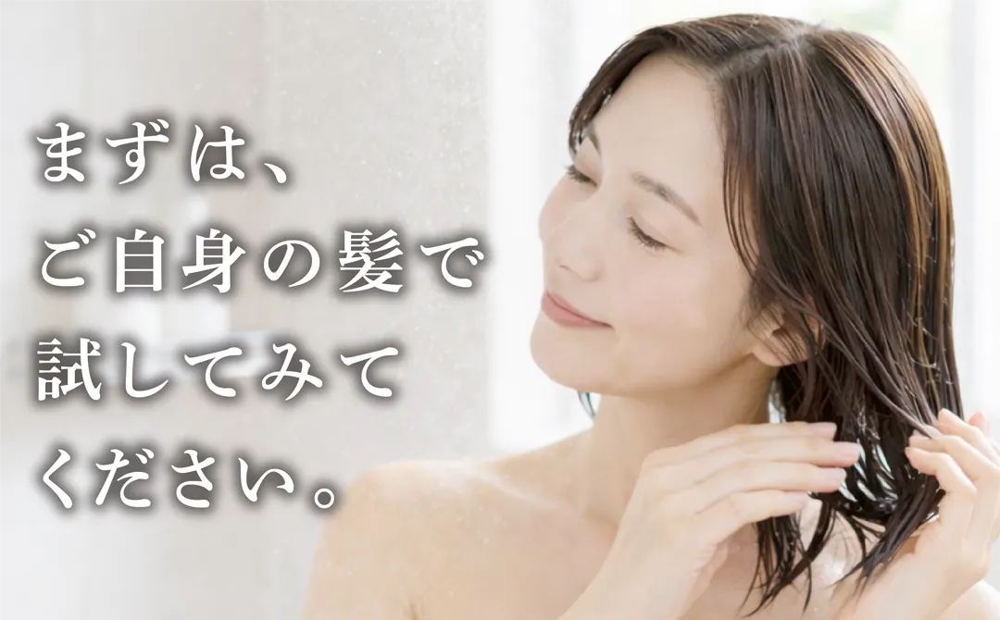
ここから先は、もっと知りたい方へ。
ヘアケアについて詳しく知りたい方は、この先へ
お進みください。
※少し長くなりますが、興味のある項目だけでも
気軽に読んでみてください。
髪は足す前に、
一度リセットするという考え方。
ヘアケアの多くは、
髪に何かをプラスすることを大切にしています。
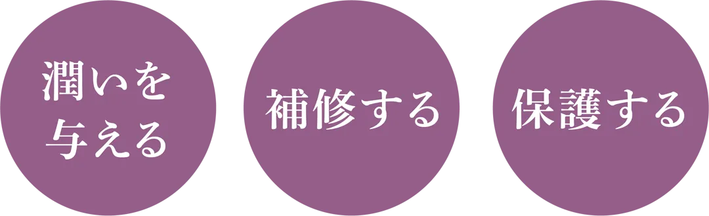
でも、もし髪が扱いにくくなっている原因が、
足りないことではなく、
積み重ねたものだとしたら。
まず必要なのは、
さらに足すことではなく、
余計なものを落とすことかもしれません。
だからDO-Sは、
「落とす」ことからはじめます。
足し算だけが、
ヘアケアではありません。
髪や頭皮には、
日々のヘアケアによって、
さまざまな成分が付着しています。
それによって手触りは変わります。
ツヤも変わります。
まとまりも変わります。
でも、それは本来の髪の状態ではありません。
DO-Sは、まず髪をニュートラルな状態
戻すことからはじまります。
そのことにより、
今の髪に本当に必要なケアが
見えてくると考えています。
すっぴん髪は、
スタートラインです。
「すっぴん髪」と聞くと、
何もつけていない髪。
何もケアしていない髪。
そんなイメージを持たれるかもしれません。
でも、DO-Sの考える「すっぴん髪」は、
少し違います。
余計なもので誤魔化さず、
髪本来の状態が見える髪。
それが、DO-Sの考える「すっぴん髪」です。
だから、ツヤを否定しているわけではありません。
トリートメントを否定しているわけでもありません。
まずは髪をニュートラルな状態に整える。
その上で必要なケアを考える。
それがDO-Sの考えるヘアケアです。
トリートメントには、
「傷んだ髪を治す」という
イメージが
あるかもしれません。
でも実際には、
一度傷んだ髪が、
元の状態に戻るわけではありません。
トリートメントの役割は、
髪を扱いやすく整えることです。
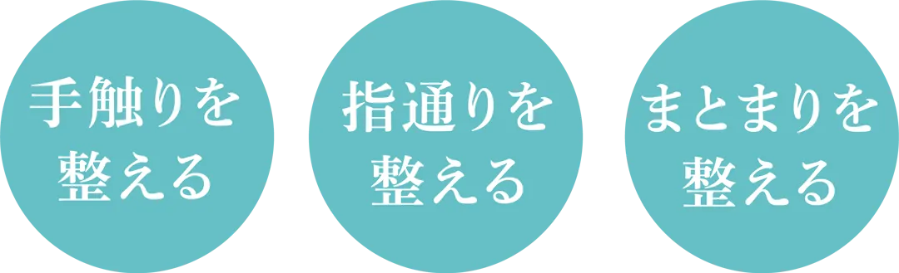
だからDO-Sは、
トリートメントを「補修剤」ではなく、
髪のコンディションを整えるものだと
考えています。
美容室の仕上りが、
ゴールではないからです。
美容師が本当に嬉しいのは、
美容室でキレイに仕上がることではありません。
次の日も、
その次の日も、
お客様が自分で扱いやすいこと。
それを大切にしています。
どんなに美容室で素敵に仕上がっても、
家で再現できなければ、
そのヘアスタイルは完成とはいえません。
だから美容師たちは、
カットやカラーだけでなく、
毎日のヘアケアも大切に考えいるのです。
このようにDO-Sの考え方は、
流行やマーケティングから生まれた
ものではありません。
すべては、ある美容師が抱いた
「美容師が思い通りのカットをしやすく、
お客様が自宅でも簡単に再現できるヘアケア
を作りたい」という想いがはじまりでした。
そして、その想いは、やがて美容業界の
常識を見つめ直すきっかけとなり、
引き算のシャンプー＆トリートメントの
開発につながりました。
DO-Sは、なぜ生まれたのか。
ここからは、DO-S誕生の物語です。
※少し昔の話になりますが、興味のある方だけ、
もう少しお付き合いください。
美容室では決まるのに、
なぜ家では
再現できないのか。
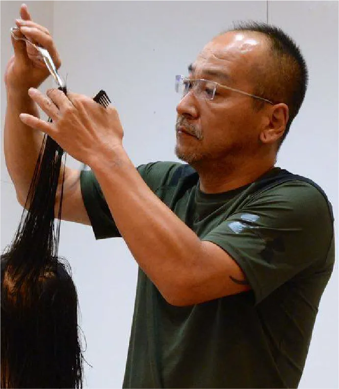
今から30年以上前。
美容室では軽やかにまとまるのに、
家に帰ると同じようにならない。
そんなことがよくありました。
カットが悪いのか。
スタイリングが悪いのか。
でも、どうも違う気がする…。
当時の美容師たちは、
美容室での仕上りと、
家での仕上りの違いに悩んでいました。
そして、ある疑問が生まれます。
本当に問題なのは、髪型なのだろうか？
もしかすると、
毎日使うヘアケアに原因があるのではないか？
DO-Sは、そんな小さな疑問からはじまりました。
良かれと思って続けていたヘアケアが、
実は髪を重たくしていた。
髪のためのヘアケアが、
髪を変えていた。
当時のヘアケアは、
髪を保護する、
髪に潤いを与える、
髪をコーティングする、
そんな考えが主流でした。
もちろん、それらはすべて髪のための
ヘアケアです。
実際に、手触りは良くなる。
ツヤも出る。
まとまりも良くなる。
しかし、美容室の現場では、
少しずつ気になる変化も見えてきました。
軽さがでない。
動きが出ない。
カットした時のデザインが活かしにくい。
髪が傷んだからではありません。
髪のために続けていたヘアケアによって、
髪そのものが少しずつ変わっていったのです。
美容室では軽やかだった髪が、
家では違う表情を見せる。
その理由を探していく中で、
ひとつの考え方にたどり着きました。
それが、「すっぴん髪ヘアケア理論」と
呼ばれる考え方です。
業界の流れとは、
逆方向だった。
当時のヘアケアは、
より潤いを与える、
よりツヤを与える、
より手触りを良くする。
ヘアケア剤もスタイリング剤も、
次々と新しい商品が登場していました。
もちろん、それらを否定するわけではありません。
ただ、美容室では決まるのに、
家では再現できない。
その原因を探していく中で、
当時のヘアケアの常識とは
まったく逆の考え方にたどり着きました。
髪が扱いにくいのは、
何かが足りないからではない。
まず必要なのは、さらに与えることではなく、
髪を本来の状態に戻し、
その状態で髪と向き合うことではないか。
そうして生まれたのが、
DO-S独自の
「すっぴん髪ヘアケア理論」です。
髪をダマすのではなく、
髪そのものを見つめ、
理解するためのヘアケア。
本当に髪のことを考えたら、
答えはシンプルでした。
「すっぴん髪ヘアケア理論」は、
その答えをカタチにしたものです。
髪の声に耳を傾ける。
カラー剤や白髪染めには、
髪や頭皮に残りやすい成分が
含まれているものがあります。
マイルドなシャンプーを使っている場合、
そうした成分が
数週間から1ヵ月ほど残ることもあると
言われています。
毎月カラーを続けていると、
成分が十分に取り除かれないまま、
次のカラーを繰り返しているケースもあります。
もちろん、
すべてのトラブルの原因が
それだけとは言えません。
しかし、
髪や頭皮に何が残っているのか。
それを意識することは、
とても大切なことだと考えています。
実は、
サロントリートメントについても
同じような経験がありました。
美容師時代、
毎月欠かさずサロントリートメントを
されるお客様がおられました。
ところが、
そうした方の中には、
髪が細くなったり、
パサついたり、
思うようにまとまらなくなったりする方も
少なくありませんでした。
なぜだろう。
髪のために続けているはずなのに、
なぜ髪は扱いにくくなっていくのか？
その理由を探していく中で、
髪の表面に積み重なっていく被膜や、
残留した薬剤の存在に
目を向けるようになったのです。
美容師だから
たどり着けた、
答えでした。
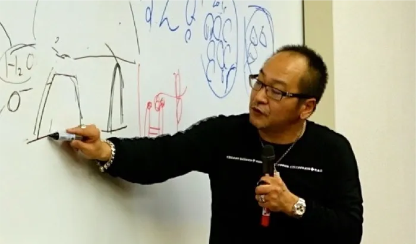
DO-Sの「すっぴん髪ヘアケア理論」は、
一人の美容師の違和感から
はじまりました。
そして今も、
その考え方は変わっていません。
お客様の髪に何が起きているのか。
なぜ思い通りにならないのか。
本当に必要なものは何なのか。
現場で生まれた疑問を、
理論として整理する。
製品としてカタチにする。
そして再び、
全国の美容師さんやお客様の声によって
検証する。
DO-Sは、
その繰り返しの中で育ってきました。
答えは、
実験室や会議室の中だけにあるものでは
ありません。
髪に触れ、
悩みに耳を傾け、
変化を見続ける。
その積み重ねの中にこそ、
本当に大切なヒントがあると
考えています。
だからDO-Sはこれからも、
美容師目線で髪と向き合い続けます。
DO-S開発者 : 森下 秀彦
美容師歴45年。
地元岡山の美容室勤務からキャリアをスタートし、
その後、薬剤メーカーのインストラクターとして製
品開発にも携わりました。
しかし、本当にやりたかったのは、お客様一人ひとり
の髪と向き合うことでした。
1988年、岡山市内で美容室を開業。
現場の美容師として、数え切れないほどの髪と向き
合う日々がはじまります。
店舗を拡大させながら、2005年頃からは、ヘアケ
ア商品の開発や、パーマ・縮毛矯正の技術や薬剤の
研究を開始。
理美容師専門誌からの取材や技術解説、全国での
セミナー活動も行うようになりました。
そんな中、毛髪ケラチン研究の第一人者である、群
馬大学元教授・新井幸三氏との出会いが大きな転
機となります。
毛髪科学や薬剤理論を学ぶことで、それまで当たり
前だと思われていた技術や理論を、もう一度見つめ
直すようになりました。
そして2011年頃から、独自の「すっぴん髪
ヘアケア理論」をブログで発信。
その考え方は、全国の理美容師さんたちの間で大
きな反響を呼びました。
現場で感じていた違和感。
理論によって裏付けられた気付き。
その答えとしてたどり着いたのが、
『残留薬品をきちんと洗い流せるシャンプー』
そして
『強い表面コートに頼らないトリートメント』
でした。
●DO-Sシャンプー
被膜を除去するため、洗浄力を強くすると髪に負担
がかかる。毎日使えるように洗浄力は強くなくても、
ちゃんと被膜除去できる絶妙のバランス。
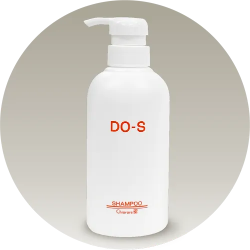
●DO-Sトリートメント
コーティングをしないことはもちろん。
染み込んでも重たくならない成分配合。
こうして誕生したのが、DO-Sシャンプー＆DO-S
トリートメントです。
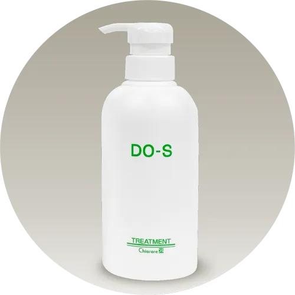
現場で生まれ、現場で育てられてきたヘアケア。
現在も株式会社DO-S企画役員として、製品の改
良・開発を続けながら、本当の毛髪科学とヘアダ
メージ理論の普及に取り組んでいます。
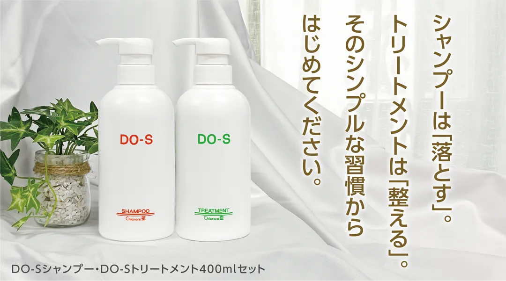
毎日続けられるシンプルなヘアケア。
DO-Sシャンプー
髪のクレンジング
余計なものを落とす
DO-Sトリートメント
髪の美容液
髪のコンディションを整える
どちらか片方では完成しません。
顔のスキンケアに
クレンジングと美容液があるように、
DO-Sヘアケアも
シャンプーとトリートメントで
ひとつのヘアケアです。
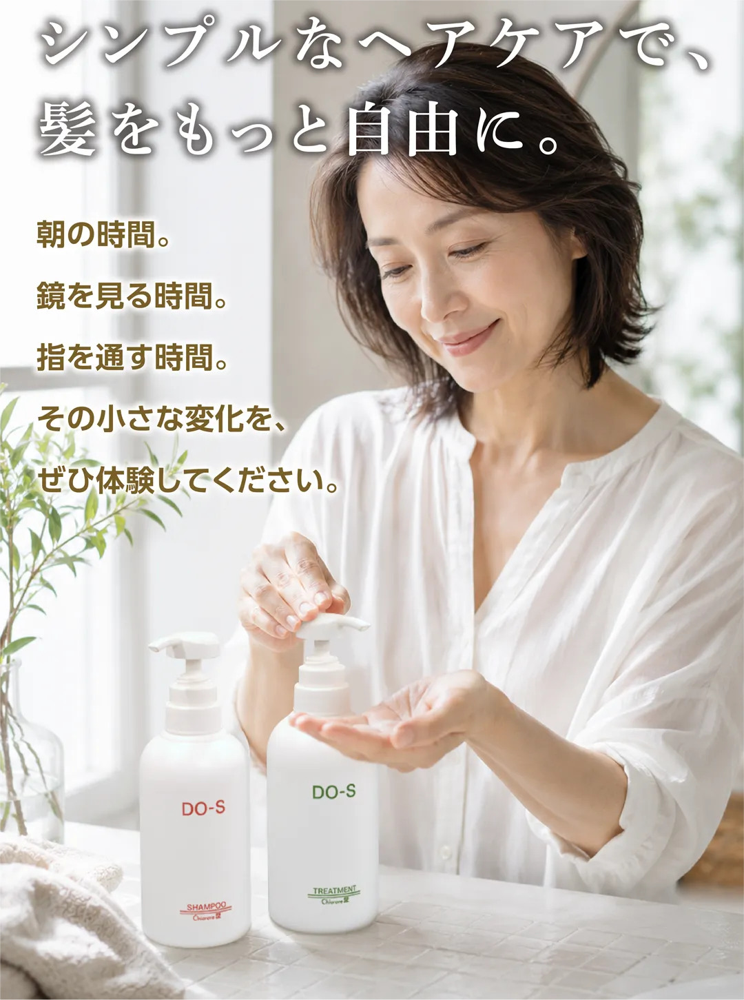
流行ではない。
広告でもない。
45年の現場経験から生まれた、
ひとつの考え方があります。
本当に髪のことを知ると、
ヘアケアはもっとシンプルになります。
まずは30日、
ご自身の髪で確かめてください。
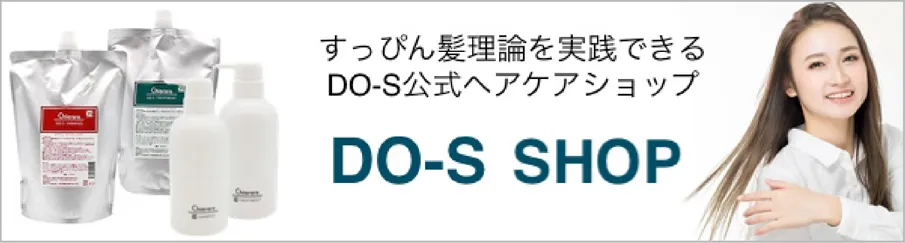
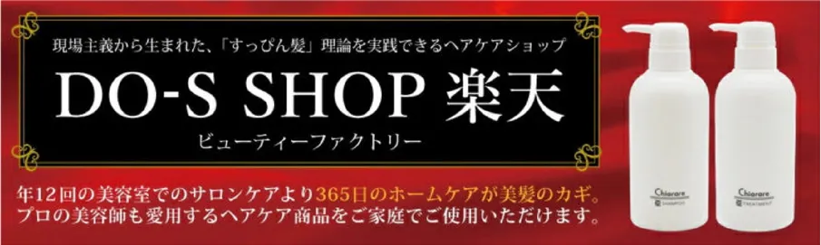
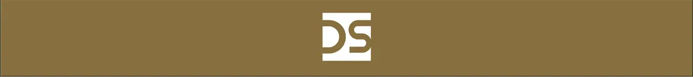